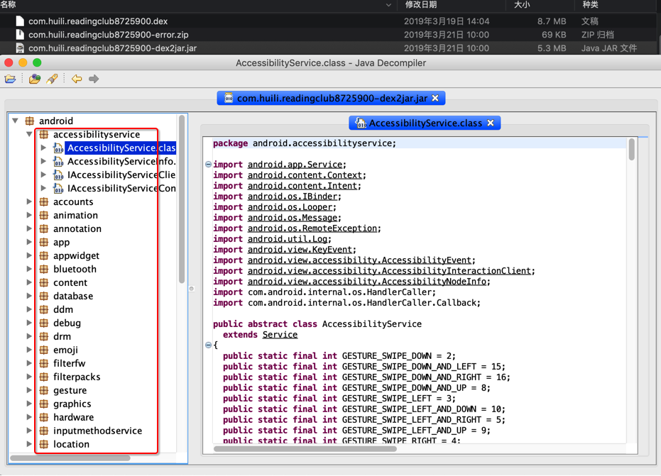

2.1 dex转java
jadx可以直接从dex导出java源码
下载jadx
- 从这里下载最新版的
jadx- 比如：
- 解压后得到：
jadx：命令行工具jadx-gui：带图形界面的- 双击即可运行
此处想要用jadx去从jar中导出代码，有两种方式：
- 用
jadx的命令行直接导出代码 - 用
jadx-gui查看代码，也可以再导出代码
下面详细介绍
jadx直接导出代码
切换到要导出代码的目录，已有dex文件要导出，则可以直接运行：
语法：
bin/jadx dex_file.dex -d output_folder
举例：
jadx-0.9.0/bin/jadx dex_file.dex -d .
../../../../../../reverse_engineering/jadx/jadx-1.0.0/bin/jadx ../../apk_to_dex/com.ishowedu.child.peiyin/com.ishowedu.child.peiyin8392664.dex -d com.ishowedu.child.peiyin8392664_java
../../../../../reverse_engineering/jadx/jadx-1.0.0/bin/jadx ../dex_to_jar/com.ishowedu.child.peiyin9201516-dex2jar.jar -d .
即可转换出源代码到当前目录下，输出有：
- resources
- sources
- 有你要的源码
转换速度还是不错的。
举例
from_v3.4.8_dex /Users/crifan/dev/dev_tool/android/reverse_engineering/jadx/jadx-0.9.0/bin/jadx ../../../../../xiaohuasheng/app_hook_dump_dex/FDex2/v3.4.8/com.huili.readingclub8825612.dex -d .
...
中间很多错误
...
WARN - Found 75 references to unknown classes
ERROR - 6 errors occurred in following nodes:
ERROR - Method: android.support.v4.provider.FontsContractCompat.getFontFromProvider(android.content.Context, android.support.v4.provider.FontRequest, java.lang.String, android.os.CancellationSignal):android.support.v4.provider.FontsContractCompat$FontInfo[]
ERROR - Method: cn.addapp.pickers.util.LogUtils.getTraceElement():java.lang.String
ERROR - Method: cn.jiguang.a.a.b.c.a(android.os.Message):void
ERROR - Method: cn.jiguang.d.b.f.a(int):boolean
ERROR - Method: cn.jiguang.d.d.m.a(android.content.Context, boolean):java.util.List<java.io.File>
ERROR - Method: cn.jiguang.g.e.a(java.lang.String, java.util.Map):cn.jiguang.g.e
WARN - 2299 warnings in 454 nodes
ERROR - finished with errors
转换后：
➜ from_v3.4.8_dex ll
total 0
drwxr-xr-x 3 crifan staff 96B 4 29 15:29 resources
drwxr-xr-x 13 crifan staff 416B 4 29 15:30 sources
转换后的代码用VSCode去打开的效果：

jadx-gui查看和导出代码
双击jadx-gui即可运行：

然后去打开对应的jar文件：com.huili.readingclub8825612-dex2jar.jar，即可看到包含了app业务逻辑的代码结构和包名：

然后展开后可以看到详细的代码：

然后如果想要导出全部代码，则可以去：
File -> Save All

然后稍等片刻：

即可在导出的sources文件夹中找到你要的源码：

具体过程详见：
备注和说明
用JD-GUI打开同一个jar的效果
另外，用JD-GUI打开同一个jar的效果：

其中找到了我们之前需要的app相关的业务逻辑的代码：
/com/huili/readingclub/activity/classroom/SelfReadingActivity.class

其中onSuccess中就是我们希望得到的对于J字段解密的逻辑。
其他无效的jar转换出jar的效果
如前一步所述，从多个dex可以转换出多个jar
而这些无效的、没有包含app业务逻辑的jar，去用一些反编译工具打开后的效果是：

其他的一些，比如腾讯乐固加密了的，最终转换出来的jar，去打开后只能看到腾讯乐固的代码：

注意事项
jadx不能从jar导出java，否则会报错
举例：
../../../../../reverse_engineering/jadx/jadx-1.0.0/bin/jadx ../dex_to_jar/com.ishowedu.child.peiyin9201516-dex2jar.jar -d .
INFO - loading ...
INFO - converting to dex: com.ishowedu.child.peiyin9201516-dex2jar.jar ...
ERROR - jadx error: Error load file: ../dex_to_jar/com.ishowedu.child.peiyin9201516-dex2jar.jar
jadx.core.utils.exceptions.JadxRuntimeException: Error load file: ../dex_to_jar/com.ishowedu.child.peiyin9201516-dex2jar.jar
at jadx.api.JadxDecompiler.loadFiles(JadxDecompiler.java:138)
at jadx.api.JadxDecompiler.load(JadxDecompiler.java:102)
at jadx.cli.JadxCLI.processAndSave(JadxCLI.java:32)
at jadx.cli.JadxCLI.main(JadxCLI.java:18)
Caused by: jadx.core.utils.exceptions.DecodeException: java class to dex conversion error:
dx exception: Translation has been interrupted
at jadx.core.utils.files.InputFile.loadFromJar(InputFile.java:191)
at jadx.core.utils.files.InputFile.searchDexFiles(InputFile.java:82)
at jadx.core.utils.files.InputFile.addFilesFrom(InputFile.java:40)
at jadx.api.JadxDecompiler.loadFiles(JadxDecompiler.java:136)
... 3 common frames omitted
Caused by: jadx.core.utils.exceptions.JadxException: dx exception: Translation has been interrupted
at jadx.core.utils.files.JavaToDex.convert(JavaToDex.java:63)
at jadx.core.utils.files.InputFile.loadFromJar(InputFile.java:182)
... 6 common frames omitted
Caused by: java.lang.RuntimeException: Translation has been interrupted
at com.android.dx.command.dexer.Main.processAllFiles(Main.java:614)
at com.android.dx.command.dexer.Main.runMultiDex(Main.java:365)
at com.android.dx.command.dexer.Main.runDx(Main.java:286)
at jadx.core.utils.files.JavaToDex.convert(JavaToDex.java:49)
... 7 common frames omitted
Caused by: java.lang.InterruptedException: Too many errors
at com.android.dx.command.dexer.Main.processAllFiles(Main.java:606)
... 10 common frames omitted